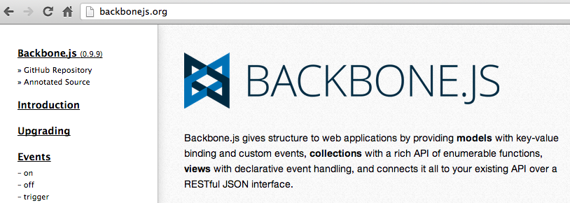

Models & Collections
Titanium Certified Developer (TCD) Training
In this lesson, you will:
- Explore Alloy's implementation of Backbone's Models & Collections
- Represent your app's data via Models and Collections
- Bind Models and Collections to Views
- Save data locally and remotely via sync adapters
- Explore migrations to update models to new schema
- Explore API (non-Alloy) techniques for saving data to properties and local database
 Topic
Topic
Models & Collections
Models
- Encapsulate the data and state of your app
- Define data-related rules (defaults, validation, etc.)
- Define where and how that data is persisted
- Define data-transformation logic ("business logic")
// File: app/models/book.js
exports.definition = {
config: {
"columns": {
"title":"string",
"author":"string",
"isbn":"string"
},
"adapter": {
"type": "sql",
"collection_name": "book"
}
}
}
Collections
- Groups of models
- Created in the controller
- There is no "models/mycollection.js" file
- But you can customize within the model file
// File: app/controllers/someview.js
var library = Alloy.createCollection('book');
library.fetch(); // Grab data from persistent storage
Model Anatomy
// File: app/models/book.js
exports.definition = {
config: {
// table schema and adapter information
},
defaults: {
// default values for fields go here
},
extendModel: function(Model) {
_.extend(Model.prototype, {
// Put model validation and manipulation functions here
});
return Model;
},
extendCollection: function(Collection) {
_.extend(Collection.prototype, {
// Put collection validation and manipulation functions here
});
return Collection;
}
}
Accessing Model Data
// Define a model of type 'book'
var book = Alloy.createModel('book', {
title:'Green Eggs and Ham',
author:'Dr. Seuss'
});
// access the fields in our model
var title = book.get('title');
var author = book.get('author');
// Assuming a Ti.UI.Label object in the view with id = 'label'
$.label.text = title + ' by ' + author;
book.set('title', 'Cat in the Hat');
$.label2text = 'Also by ' + author + ', ' + title;
Accessing Model/Collection Data
function addItem() {
var books = Alloy.Collections.books;
// Create a new model for the books collection
var book = Alloy.createModel('book', {
author : $.authorField.value,
title : $.titleField.value,
isbn : $.isbnField.value
});
// add new model to the collection
books.add(book);
// save the model to persistent storage
book.save();
// reload the tasks
books.fetch();
closeWindow();
}
Extending Backbone.Model
exports.definition = {
config: {
// table schema and adapter information
},
extendModel: function(Model) {
_.extend(Model.prototype, {
// Implement the validate method
validate: function (attrs) {
for (var key in attrs) {
var value = attrs[key];
if (key === "title") {
if (value.length <= 0) {
return "Error: No title!";
}
}
}
},
// Extend Backbone.Model with a custom property and function
customProperty: 'book',
customFunction: function() {
Ti.API.info('I am a book model.');
},
});
return Model;
}
}
Models/Collections based on Backbone
- Backbone.js is an MVC framework for web development
- Alloy's models/collections based on the Backbone's classes
- Requires Underscore.js (so it's included in Alloy projects)

e.g. Extending Collections to Sort
// in our controller
var books = Alloy.Collections.books;
// force a sort() by title
books.sort();
// in our model
exports.definition = {
config: {
// schema and adapter info
},
extendModel: function(Model) {
_.extend(Model.prototype, {
});
return Model;
},
extendCollection: function(Collection) {
_.extend(Collection.prototype, {
// Implement the comparator method,
// which is used to sort the collection
comparator : function(book) {
return book.get('title');
}
}); // end extend
return Collection;
}
}
Model/Collection Events
- Many Alloy (Backbone) operations fire events
- Model events include: add, change, change:field_name, & error
- Collection events include add, change, error, remove, reset, & sort
exports.definition = {
config: {
// table schema and adapter information
},
initialize: function(){
this.on("error", function(currentModel){
Ti.API.error('error!!');
});
},
extendModel: function(Model) {
_.extend(Model.prototype, {
// Implement the validate method
validate: function (attrs) {
// validation code here
},
...
Topic
Representing App Data
Data types
- SQLite: TEXT, INTEGER, REAL, BLOB
- Alloy: string, varchar, int, tinyint, smallint, bigint, double, float, decimal, number, date, datetime and boolean
- Map logically (int, tinyint, etc. → INTEGER)
- Unknown types map to TEXT
Example
// File: app/models/book.js
exports.definition = {
config: {
"columns": {
"title":"string",
"author":"varchar",
"isbn":"string",
"price": "float",
"publishDate": "date"
},
"adapter": {
"type": "sql",
"collection_name": "book"
}
}
}
Custom Queries
function showColorInfo(e) {
var color = e.row.model.color;
var collection = Alloy.createCollection('color');
// fetch color info from the color collection based on the
// given color from the user model
collection.fetch({
query: 'SELECT * FROM colors WHERE color = "' + color + '"'
});
...
Underscore methods
- Alloy includes the underscore.js library
- Use its methods to provide group-by and other data selection techniques
- See http://underscorejs.org/#collections
_.each(yourCollection, someFunction);
_.sortyBy(yourCollection, fieldName);
_.groupBy(yourCollection, fieldName);
Installing a Pre-built Database
exports.definition = {
config: {
"columns": {
"name":"text",
"nickname":"text"
},
"adapter": {
"type": "sql",
"collection_name": "fighters",
// Pre-load the database (safe method)
"db_file": "fighters.sqlite",
// db_name required when pre-loading a db
// should the name of your pre-loaded db
"db_name": "fighters"
// default primary key is alloy_id
// specify your own unique ID field with
"idAttribute": "id"
}
}
}
Topic
Binding Models & Collections to Views
Binding
- Bind a collection to a TableView or View object
- Bind a model to a component (i.e. button)
- Alloy monitors add(), destroy(), remove(), change(), and fetch() methods and updates the view
- Accomplished in View XML rather than controller
Example
// in the View
<Alloy>
<Collection src="books" />
<Window class="container">
<TableView dataCollection="books">
<!-- Also can use Require -->
<TableViewRow title="{title}" />
</TableView>
</Window>
</Alloy>
// in the associated controller
var books = Alloy.Collections.book;
books.fetch();
$.index.open();
Releasing the model binding
// in the View
<Alloy>
<Collection src="movies">
<Window id="moviesWin">
<TableView dataCollection="movies">
<TableViewRow title="{title}"/>
</TableView>
</Window>
</Alloy>
// in the controller
$.moviesWin.on('close', function() {
// make sure to call $.destroy() when you are done with the
// controller/window. This will ensure that no memory is
// leaked and that the bindings are properly released.
$.destroy();
});
Alloy.Collections.movies.fetch();
Topic
Sync Adapters (saving data)
Saving a Model
function addItem(itemname) {
var todos = Alloy.Collections.todo;
// Create a new model for the todo collection
var task = Alloy.createModel('Todo', {
item : itemname,
done : 0
});
// add new model to the global collection
todos.add(task);
// save the model to persistent storage
task.save();
// reload the tasks
todos.fetch();
}
Sync Adapters
- 'sql' - SQLite database on iOS/Android
- 'localStorage' - HTML5 Local Storage on Mobile Web
- 'properties' - application properties on all
- Specify in the model
- Purpose of collection_name varies
// File: app/models/book.js
exports.definition = {
config: {
"columns": {
"title":"string",
"author":"string",
"isbn":"string"
},
"adapter": {
"type": "sql",
"collection_name": "book"
}
}
}
Custom Sync Adapters
- Community contributions: ACS, Dual-storage (local & remote), and more
- Model/Collection methods implement RESTful calls
- Define in a JavaScript file in either app/assets/alloy/sync or app/lib/alloy/sync
- See docs for more info: http://goo.gl/XTn9O
Topic
Migrations
Migrations
- Stored in app/migrations/
- File name: YYYYMMDDHHMMSS_model.js e.g. 20120610049877_book.js.
- You must have the same new columns/defaults in the model and migration file
Migration - Example
migration.up = function(db) {
db.createTable({
"columns": {
"book": "string",
"author": "string",
"isbn": "integer" /* our new field */
},
"defaults": {
"isbn": "0"
},
"adapter": {
"type": "sql",
"collection_name": "books"
}
});
};
migration.down = function(db) {
db.dropTable("books");
};
Migration - Example 2
migration.up = function(migrator) {
var db = migrator.db; // our database connection object
var table = migrator.table;
db.execute('CREATE TEMPORARY TABLE book_backup(title,author,isbn,alloy_id);')
db.execute('INSERT INTO book_backup SELECT title,author,isbn,id FROM ' + table + ';');
migrator.dropTable();
migrator.createTable({
columns: {
title:"TEXT",
author:"TEXT",
isbn:"INTEGER"
},
});
db.execute('INSERT INTO ' + table + ' SELECT title,author,isbn,alloy_id FROM book_backup;');
db.execute('DROP TABLE book_backup;');
};
migration.down = function(migrator) {
}
Topic
Direct/API Style Access
Properties API
- Lightweight key/value store
- Best for few values, mostly strings
- Ti.App.Properties offers get/set methods for strings, booleans, numbers, objects
- Remains in memory during app execution
var foo = Ti.App.Properties.getString('foo');
var foo = 'bar';
Ti.App.Properties.setString('foo', foo);
Database API
- Direct access to SQLite DB
- Ti.Database.open()
- Ti.Database.install()
- Interact with "raw" SQL commands
- Not available on Mobile Web
- You can use direct DB access with Alloy (just not with models)
var conn = Ti.Database.open('todos');
var data = [];
var rows = conn.execute('SELECT * FROM todoitems');
while(rows.isValidRow()) {
data.push({
title: rows.fieldByName('todo'),
id: rows.fieldByName('id')
});
rows.next();
}
rows.close();
conn.close();
API access benefits
- Use existing DB libraries
- Prior to Alloy 0.3.5: SQL adapter limitations: no joins, group by, or other "advanced" query support
Summary
In this lesson, you:
- Explored Alloy's implementation of Backbone's Models & Collections
- Represented your app's data via Models and Collections
- Bound Models and Collections to Views
- Saved data locally and remotely via sync adapters
- Explored migrations to update models to new schema
- Explored API (non-Alloy) techniques for saving data to properties and local database
Q&A
Lab Objectives
In this lab, you will:
- Back an app's UI with data in an Alloy Model
- Save data in a local SQLite database
- Bind a DB table to a TableView
- Seed the database with initial data
Lab: wiki.appcelerator.org/display/td/06.+Models+and+Collections
Solution Walkthrough